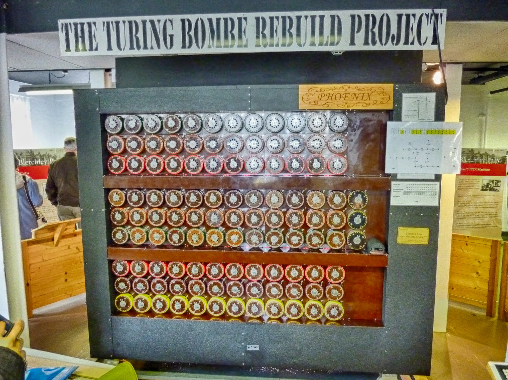

I want to take the opportunity of the recent talk by Audrey Watters on Ed-Tech's Monsters to share some of my thoughts.
In her talk, Watters physically bases herself at Bletchley Park, a place of invention, ingenuity and deceit that greatly contributed to the Allies' war effort and incidentally the evolution of computing. She then steps back in time to Ludd and his followers, who rebelled against the introduction of machinery in their work. She then segways into the Frankenstein story of a creation abandoned by its master and finally draws parallels with the situation in ed tech today and the "promises" of teaching machines. This was an impossibly bad and short summary of a very good talk, so I would highly recommend to any reader lost here to go read the original. After doing that, please come back.
During World War II, cryptographers worked at Bletchley Park to decipher German and Japanese secret messages. These were encoded by various versions of a machine called Enigma, a typewriter wired with multiple electrical contacts that constantly shuffled letters around. It is really a quite dumb but very messy and obfuscated process, with one useful property: at any stage it created an involution, so one can use the same machine to both encrypt and decrypt. You can see little Millie demonstrating this in the video above (shot in September 2013 by yours truly).

To attack the ciphered messages, the cryptologists at Bletchley Park did not build full on computers, but instead machines that could simulate many Enigmas in parallel (36 Enigmas per Turing Bombe). These also had extra wiring which encoded additional properties of the Enigma protocol. On any given day, around 200 of these machines were used to recover the common settings for all the encrypted messages sent that day.
What has always fascinated me with Blecthley Park is the subtle interplay between humans and the machines. While the heavy computations were done by those Bombes, the British did not seek/manage to automate everything. Some steps were always left to manual labor, most notably message passing and picking the initial input. The initial input was known as a crib, and is essentially an informed guess at partial plain text. It seems to have always been more of an art than a science to obtain, even involving some psychology to know where to look. By message passing, I mean that Bletchley Park was not just a bunch of machines: these were disconnected, so there had to actually be many people transcribing output from one machine, making relatively simple decisions (all lights lit!) and entering that output into the next machine. There were several good reasons to do it this way. It is easier to train staff than build a new and complex sorting machine. On top, war is messy, and the Germans changed their procedures several times, requiring agility in the workflow (the Germans were less likely to change their hardware). Over the course of the war, there was constant prototyping of different workflows around core mechanical infrastructure, and this experience helped abstract the generic modern computer (formally, a Turing Machine) and eventually build it (unlike Charles Babbage's machine and Ada Lovelace's programs which remained theoretical).
The lesson of Bletchley Park is that it is sometimes easier but sufficient to build a social machine rather than a fully automated machine.
A social machine is an environment comprising humans and technology interacting and producing outputs or action which would not be possible without both parties present. The term became popular thanks to Tim Berners-Lee, who anticipated them along with the World Wide Web.
Facebook, for instance, serves as a social machine in multiple ways. You can pass on content to your friends, which they can "like" and comment on, they can tag you in pictures, etc. Every such action is logged, and this machine has a unique goal: to know you better and serve you more valuable ads. All the necessary information has to be volunteered by humans because machines would not have been able to guess it on their own. Sometimes this social machine actively uses your friends to disclose information you might have wanted to keep private, even if you are not a Facebook user! Kids ratting on their parents, in other words.
How is this relevant to ed tech? One of the most successful social machines in education is Duolingo. While it offers students the option of learning a language, it is really built with the intention of translating the web, and uses a creative setup to find and motivate participants. Even the course creation is now crowdsourced, via its incubator. MOOCs actually tend to rely heavily on the same type of crowdsourcing. Course creation is crowdsourced to professors, who can create custom social machines tailored to the topic at hand. When the course is run, this machine collects information about who is a good student, who is bad, who is a deep thinker, who is meticulous, who defines their own path, etc. Eventually, the goal might be to evaluate all these characteristics at scale algorithmically (despite all the risks for algorithmic bias that this entails), but the key point is that it can be "faked" at first: via peer feedback and rubric grading, one can use power relationships to inject fairly complicated judgements into this machine, at scale, with little cost.
Similarly, other relatively complex MOOC services are also sometimes crowdsourced, such as translating course materials, or mutual technical support for the professors and students. One can expect that some of these tasks will eventually also be automated: for instance, some MOOC platforms already use intelligent agents (robots masquerading as humans) to answer student questions in the forums.
MOOC platforms offer the option to professors to easily stand up their own social machines. What should be their purpose? Who should be responsible for them?
Watters insist that Luddites were not rejecting technology, but rather rejecting exploitation. Crowdsourcing already carries significant risks of exploitation, particularly in the domain of intellectual property, but this is not the only one. In another talk, she says that "Student data is the new oil". Indeed, this seems to be another path that all the big MOOC providers have chosen so far. A professor building a MOOC only helps the platform collect more private information about its users, maybe even under the guise of improving their user experience. But for what purpose exactly? Which engine is running off this oil? Where is it headed? Is this data helping for research in education? In social science? In human-computer interaction? Or simply for profit, selling that data to the highest bidder/best revenue model, without moral guidance? All these options are actively pursued right now, sometimes simultaneously, and professors preparing a MOOC should give great pause to these issues and think carefully at the setting where they have decided to do so. Possibly they might have to fight for the luxury of picking this setting. Professors have a lot of moral responsibility towards the students (the weakest cogs by far in this social machine), to make sure that the free-education-for-all mantra does not turn into another form of exploitation. Do these professors even fully understand the situation? Do they fully understand how free-is-a-lie? Who carries the responsibility of informing them?
Research conducted without applied ethics is morally bankrupt because when scientists lack morals, outside sources can more easily manipulate their work for destructive purposes. In such situations, scientists are likely to adopt the rationalizations of that party to justify their efforts.
—Erica Cook
In the Bletchley Park analogy, this moral responsibility is eclipsed by the dramatic circumstances of war. One person encodes, the other one decodes, some people die, some survive but at least it feels fair (to me at least, maybe blinded by my mathematicians' background). Yet the parallels outlined above remain as strong with Los Alamos and the atomic bomb, where Feynman was reorganising his own social machine to perform simulations of atomic explosions, even holding competitions pitting his chimeric machine against actual IBM computers. Certainly, the ethical questions are more nagging with Los Alamos, but on either side of the Atlantic the machine operators never had the opportunity to raise concerns with what they were contributing to. In an environment full of (male) generals and (male) scientists the machines were mostly "manned" by women, within a society that didn't even pretend to give them an equal voice. After the war, many ethical question hung squarely and solely on the scientists' shoulders.
So if we don't like the current MOOC models, what should be the way forward?
Luddites were seeking to disrupt the technological disruption, and we as professors should seek to do the same.
In fact, one might argue this is part of our job, to help society move forward without fear of a challenge, criticism or controversy, as long as we can back our arguments with evidence. In today's conversation, business logic has misappropriated the words "disruption" and "innovation" and mostly tied them with technology. In fact, disruption is to be found anywhere in academia, if not more in the humanities: "why?" is a more powerful question than "how?". Certainly some MOOC providers have opened themselves up to this disruption themselves, through overinflated claims of fixing with old technology something that was not necessarily broken. MOOCs are a fantastic opportunity to build truly new ways of learning, collaborating, discovering and generally helping society progress through exchange of information.
Getting these improved MOOCs off the ground will be hard. It will require dedication, transparency, freedom to tinker, accountability and tolerance for failure. Above all, it will require rock solid ethical ground, which is too easy to compromise in a competitive environment mixing academia and its "strategic relationships".